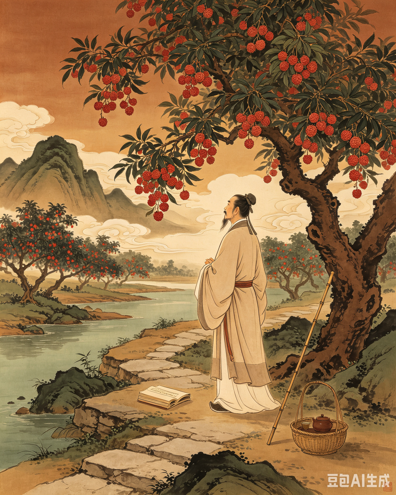
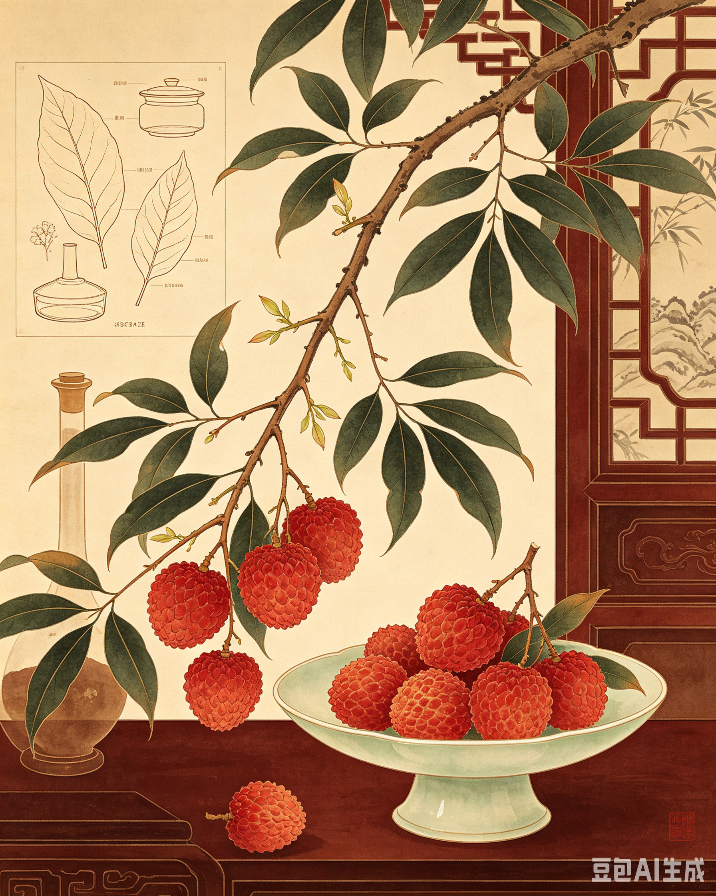
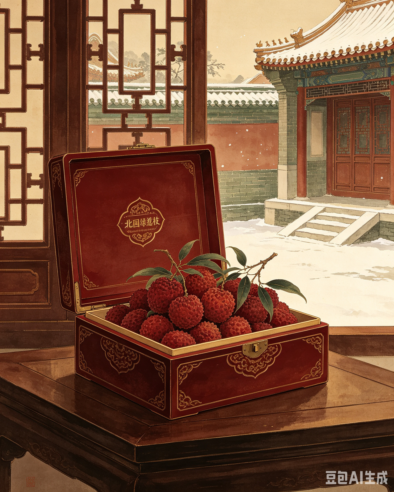
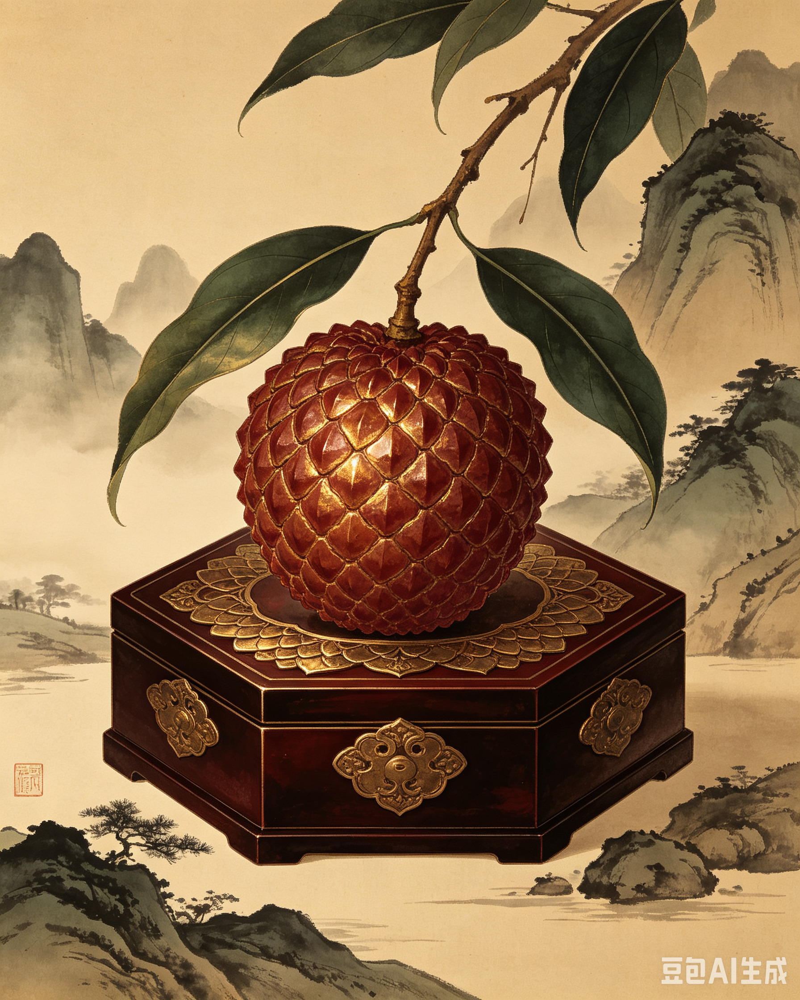
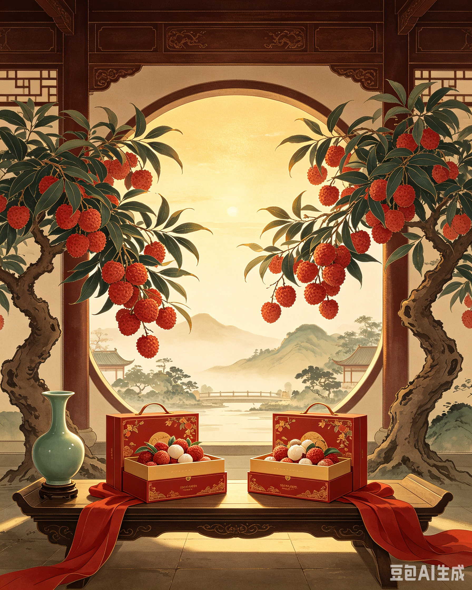

CHRONICLE
八百年荔史长卷
南宋 · 嘉泰
陈氏始祖建北园
陈乐善自福建南迁增城，携古荔种开辟北园。北园绿挂绿母树自此扎根，流转近八百年光阴，与西园挂绿同源并蒂。

元 · 大德八年
《南海志》定论佳品
陈大震、吕桂孙纂修《南海志》卷五明确记载："今佳品多出增城"，一口气罗列十四款古荔名品——大将军、状元红、绿罗包、丫髻无核荔悉数在册。
明末清初
屈大均《广东新语》
岭南大儒屈大均遍历粤地，留下千古定论："若荔枝，则以增城为贵族。" 并称自挂绿以下数十种"色香味迥异他县"。


2018 年
北园绿通过省级审定
广东省农科院果树研究所联合增城农技中心、正旭农业，深挖北园挂绿优良基因，历经多轮改良育成北园绿，跻身广东荔枝产业联盟十大主推品种。
2022 年
北园绿进京 SKP
北园绿入驻北京 SKP 华联超市，1049 元/斤高端定位打开北方礼品市场，千年增城古荔走进京城高端圈层。


2025 年
玄甲绿惊艳问世
正旭农业联合省农科院十载定向研发，玄甲绿（曾用名玄甲金）正式面世。果披玄甲鳞纹、金辉流转，取元代"大将军荔"雄浑意象，定价 1699 元/20 粒礼盒。
2026 · 六月
双珍联袂 · 荔文化季
"红荔添新彩，农墨藏匠心"正旭文藏园荔枝文化季举行，BHG 精品超市荔枝直供基地授牌，双珍佳荔正式立足北方高端市场。
